-
2018.12.5 - Seminar
RhoA Signaling in Vascular Physiology and Disease
Speaker: Prof. Gervaise Loirand
Unit of l’institut du thorax Inserm UMR 1087/CNRS 6291 Nantes
France
Time: 4:00 p.m.
Venue: Seminar Room 5, Lower Ground Floor, Laboratory Block, Li Ka Shing Faculty of Medicine, 21 Sassoon Road, Hong Kong
-
2018.12.1 - Seminar
Metabolic and Bariatric Surgery: Clinical Challenges and Opportunities to Basics
Speaker: Dr. Wah Yang
Department of Medicine, The University of Hong Kong
Time: 12:30 p.m.
Venue: Seminar Room 4, Ground Floor, Laboratory Block, Li Ka Shing Faculty of Medicine, 21 Sassoon Road, Hong Kong
-
2018.12.1 - Seminar
中國肥胖與代謝病外科：過去、現在與未來
Speaker: Prof. Cunchuan Wang
Department of Metabolic and Bariatric Surgery
The First Affiliated Hospital of Jinan University
Guangzhou, China
Time: 11:30 a.m.
Venue: Seminar Room 4, Ground Floor, Laboratory Block, Li Ka Shing Faculty of Medicine, 21 Sassoon Road, Hong Kong
-
2018.11.16 - Seminar
Metabolic Function of the Canonical Wnt Signaling Pathway
Speaker: Prof. Tianru Jin
Department of Physiology, University of Toronto, Canada
Time: 4:00 p.m.
Venue: Seminar Room 5, Lower Ground Floor, Laboratory Block, Li Ka Shing Faculty of Medicine, 21 Sassoon Road, Hong Kong
-
2018.8.1 - Seminar
Joint Seminar with Stem Cell and Regenerative Medicine Consortium:
Past, present and future of AAV-based gene therapy: capsid evolution and translational vectorology
Speaker: Dr. Leszek Lisowski
Group Leader,Translational Virology
Manager, Vector and Genome Engineering Facility
Children's Medical Research Institute (CMRI)
University of Sydney, Sydney, NSW AustraliaTime: 10:30 a.m.
Venue: Seminar Room 4, Ground Floor, Laboratory Block, Li Ka Shing Faculty of Medicine, 21 Sassoon Road, Hong Kong
-
2018.6.4 - Seminar
Epigenetic Mechanisms: Hidden Treasures in Chronic Diabetic Complications
Speaker: Professor Subrata Chakrabarti
Chair, Department of Pathology and Laboratory Medicine, Western University
Chief, Department of Pathology and Laboratory Medicine,
London Health Sciences CentreTime: 11:00 a.m.
Venue: Seminar Room 6, Lower Ground Floor, Laboratory Block, Li Ka Shing Faculty of Medicine, 21 Sassoon Road, Hong Kong
-
2018.5.28 - Seminar
Advancing Cardiovascular Research and Drug Discovery Using Novel Transgenic Rabbit Models
Speaker: Professor Y. Eugene Chen
Frederick Huetwell Professor of Cardiovascular Medicine
Vice-Chair for Basic and Translational Research, Department of Cardiac Surgery
Director, Center for Advanced Models for Translational Sciences and Therapeutics
Associate Director, UMHS-PUHSC Joint Institute
University of Michigan Medical CenterTime: 4:00 p.m.
Venue: Seminar Room 5, Lower Ground Floor, Laboratory Block, Li Ka Shing Faculty of Medicine, 21 Sassoon Road, Hong Kong
-
2018.5.23 - Seminar
LNATM -based tools for functional analysis and LNA-enhanced miRNA qPCR
Speaker: Dr. Michael Bussmann
Senior Global Product Manager, QIAGENTime: 2:00 p.m.
Venue: Seminar Room 3, Ground Floor, Laboratory Block, Li Ka Shing Faculty of Medicine, 21 Sassoon Road, Hong Kong
-
2018.4.19 - Seminar
Pharmacology of vascular MNA-cox2∕PGI2 pathway
Speaker: Professor Stefan Chlopicki
Chair of Pharmacology, Jagiellonian University Medical College
Director of Jagiellonian Centre for Experimental Therapeutics,
Jagiellonian University, Krakow, PolandTime: 5:00 p.m.
Venue: Lecture Theatre 2, Ground Floor, Cheung Kung Hai Conference Centre, William WM Mong Block, 21 Sassoon Road, Hong Kong
-
2018.4.9 - Seminar
Chloride channels in Cardioprotection
Speaker: Dr. Dayue Derrel DUAN
Professor, Department of Pharmacology
Laboratory of Cardiac and Vascular Phenomics, University of Nevada School of Medicine, USATime: 5:00 p.m.
Venue: Seminar Room 1, Ground Floor, Laboratory Block, Li Ka Shing Faculty of Medicine, 21 Sassoon Road, Hong Kong
-
2018.1.19
Croucher Foundation Advanced Study Institute
Frontier in Immunometabolism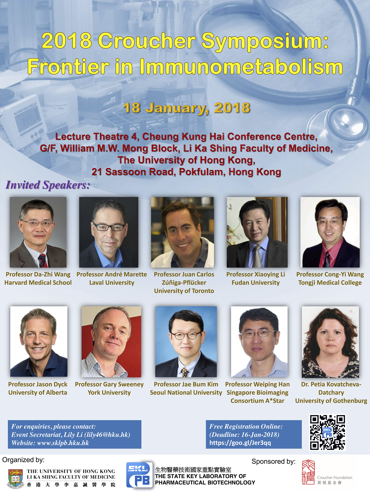
-
2018.1.8 - Seminar
The Role of Phospholipids in Lipid Droplet Growth and Adipocyte Development
Speaker: Professor Hongyuan Robert YANG
School of Biotechnology and Biomolecular Sciences
University of New South Wales, AustraliaTime: 11:00 a.m.
Venue: Seminar Room 4, Ground Floor, Laboratory Block, Li Ka Shing Faculty of Medicine, 21 Sassoon Road, Hong Kong
-
2017.11.29 - Public Lecture
Public Lecture: Extracellular MicroRNA: Function and Mechanism of Action
Speaker: Professor Chenyu Zhang
Professor of Biochemistry
Dean of School of Life Sciences
Vice-Chancellor, Nanjing UniversityTime: 4:00 p.m.
Venue: Lecture Theatre 2, Cheung Kung Hai Conference Centre, G/F, William M. W. Mong Block, 21 Sassoon Road, Hong Kong
| Register |
-
2017.11.21 - Seminar
Curcumin and Dietary Polyphenol Study: Beyond Drug Discovery
Speaker: Professor Tianru Jin
Department of Physiology
University of Toronto
CanadaTime: 11:00 a.m.
Venue: Seminar Room 6, Lower Ground Floor, Laboratory Block, Li Ka Shing Faculty of Medicine, 21 Sassoon Road, Hong Kong
-
2017.11.21 - Seminar
Metabolic Neuroendocrine Regulation of Intestinal and Hepatic Lipid Metabolism via a Gut-Brain-Liver Axis
Speaker: Professor Khosrow Adeli
Department of Clinical Biochemistry
University of Toronto
CanadaTime: 10:00 a.m.
Venue: Seminar Room 6, Lower Ground Floor, Laboratory Block, Li Ka Shing Faculty of Medicine, 21 Sassoon Road, Hong Kong
-
2017.11.14 - Seminar
Metabolic Signaling in Feast and Famine
Speaker: Professor Yang Xiaoyong
Associate Professor, Comparative Medicine
Cellular and Molecular Physiology
School of Medicine
Yale University, USATime: 2:00 p.m.
Venue: Seminar Room 7-03, 7/F, Hong Kong Jockey Club Building for Interdisciplinary Research, 5 Sassoon Road, Hong Kong
-
2017.11.6 - Seminar
Professor Eric Honoré
Joint Seminar by HKU-Pasteur Research Pole and SKLPB: The Mechanobiology of Ion Channels: May the Force Be with You!
Speaker: Professor Eric Honoré
Professor, Institute of Molecular and Cellular Pharmacology
Centre National de la Recherche Scientifique (CNRS)
Valbonne, Sophia Antipolis, FranceTime: 11:00 a.m.
Venue: Seminar Room 7-03, 7/F, Hong Kong Jockey Club Building for Interdisciplinary Research, 5 Sassoon Road, Hong Kong
-
2017.10.25 - Seminar

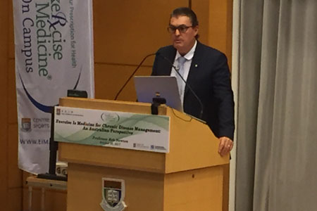
Professor Rob Newton
Seminar: Exercise as Medicine for Chronic Disease Management: An Australian Perspective
Speaker: Professor Rob Newton
Associate Dean, Medical and Exercise Sciences
Co-Director, the Exercise Medicine Research Institute, School of Medical and Health Sciences, Edith Cowan University,
Perth, Western AustraliaTime: 1:00 p.m.
Venue: Lecture Theatre 2, Cheung Kung Hai Conference Centre, G/F, William M. W. Mong Block, 21 Sassoon Road, Hong Kong
-
2017.10.21-22
12TH ASIA PACIFIC DIABETES & OBESITY
STUDY GROUP SYMPOSIUM (APDO)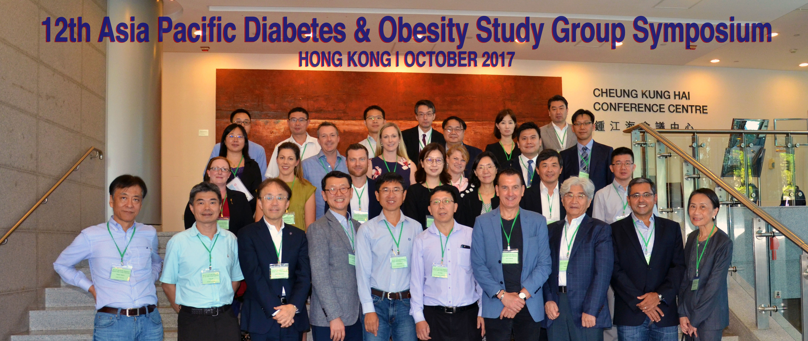
Time: 8:45 a.m.
Venue: Exhibition Area, Seminar Room 1-3, G/F Laboratory Block, Li Ka Shing Faculty of Medicine, The University of Hong Kong, 21 Sassoon Road, Pokfulam, Hong Kong
| View Photos | Official Website |
-
2017.8.29
HIGHLIGHT
Zhe Huang and Ling Zhong, et al. have a new publication in the Cell Metabolism.
Article: The FGF21-CCL11 Axis Mediates Beiging of White Adipose Tissues by Coupling Sympathetic Nervous System to Type 2 Immunity. (doi: 10.1016/j.cmet.2017.08.003)
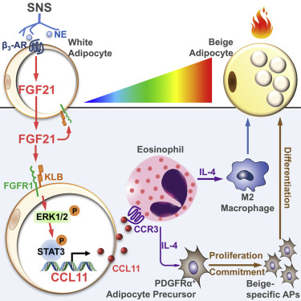
Type 2 cytokines are important signals triggering biogenesis of thermogenic beige adipocytes in white adipose tissue (WAT) during cold acclimation. However, how cold activates type 2 immunity in WAT remains obscure. Here we show that cold-induced type 2 immune responses and beiging in subcutaneous WAT (scWAT) are abrogated in mice with adipose-selective ablation of FGF21 or its co-receptor β-Klotho, whereas such impairments are reversed by replenishment with chemokine CCL11. Mechanistically, FGF21 acts on adipocytes in an autocrine manner to promote the expression and secretion of CCL11 via activation of ERK1/2, which drives recruitment of eosinophils into scWAT, leading to increases in accumulation of M2 macrophages, and proliferation and commitment of adipocyte precursors into beige adipocytes. These FGF21-elicited type 2 immune responses and beiging are blocked by CCL11 neutralization. Thus, the adipose-derived FGF21-CCL11 axis triggers cold-induced beiging and thermogenesis by coupling sympathetic nervous system to activation of type 2 immunity in scWAT. 
| Cell Metabolism |
-
2017.8.18 - Public Lecture
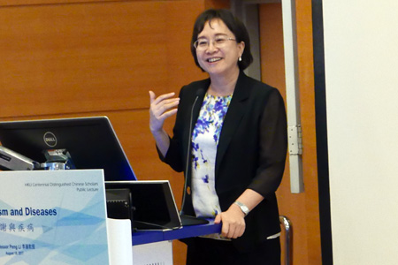
Professor Peng Li
Public Lecture: Metabolism and Diseases
Speaker: Professor Peng Li
Academician of the Chinese Academy of Sciences
Director of the Division of Life Sciences, National Natural Science Foundation of China
Professor of the School of Life Sciences, Tsinghua University, ChinaTime: 4:00 p.m.
Venue: Lecture Theatre 1, Cheung Kung Hai Conference Centre, G/F, William M. W. Mong Block, 21 Sassoon Road, Hong Kong
-
2017.8.17
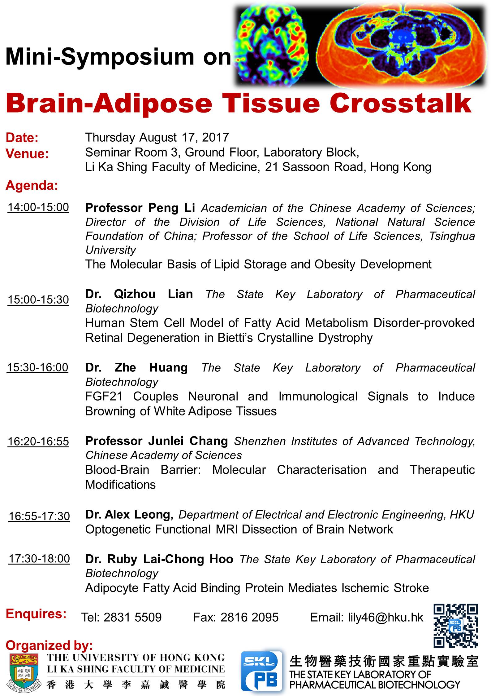Time: 2:00 p.m. to 6:00 p.m.
Venue: Seminar Room 3, Ground Floor, Laboratory Block, Li Ka Shing Faculty of Medicine, 21 Sassoon Road, Hong Kong
-
2017.8.8
HIGHLIGHT
Chen Jin and Li Jin et al. have a new publication in Science Signaling.
Article: TRIF-dependent Toll-like receptor signaling suppresses Scd1 transcription in hepatocytes and prevents diet-induced hepatic steatosis.
Nonalcoholic fatty liver disease (NAFLD) includes a spectrum of diseases that ranges in severity from hepatic steatosis to steatohepatitis, the latter of which is a major predisposing factor for liver cirrhosis and cancer. Toll-like receptor (TLR) signaling, which is critical for innate immunity, is generally believed to aggravate disease progression by inducing inflammation. Unexpectedly, we found that deficiency in TIR domain-containing adaptor-inducing interferon-β (TRIF), a cytosolic adaptor that transduces some TLR signals, worsened hepatic steatosis induced by a high-fat diet (HFD) and that such exacerbation was independent of myeloid cells. The aggravated steatosis in Trif-/- mice was due to the increased hepatocyte transcription of the gene encoding stearoyl-coenzyme A (CoA) desaturase 1 (SCD1), the rate-limiting enzyme for lipogenesis. Activation of the TRIF pathway by polyinosinic:polycytidylic acid [poly(I:C)] suppressed the increase in SCD1 abundance induced by palmitic acid or an HFD and subsequently prevented lipid accumulation in hepatocytes. Interferon regulatory factor 3 (IRF3), a transcriptional regulator downstream of TRIF, acted as a transcriptional suppressor by directly binding to the Scd1 promoter. These results suggest an unconventional metabolic function for TLR/TRIF signaling that should be taken into consideration when seeking to pharmacologically inhibit this pathway. 
-
2017.8.1 - Seminar
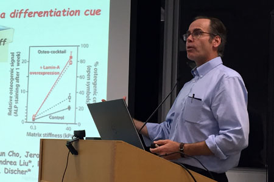
Professor Dennis E Discher
Seminar: Fat is Soft and Bone is Stiff: Stem Cells Sense Matrix Stiffness as a Differentiation Cue
Speaker: Professor Dennis E Discher
Director, NCI Physical Sciences in Oncology
University of Pennsylvania, Philadelphia
PA, USATime: 4:00 p.m.
Venue: Seminar Room 4, Ground Floor, Laboratory Block, Li Ka Shing Faculty of Medicine, 21 Sassoon Road, Hong Kong
-
2017.7.13 - Seminar
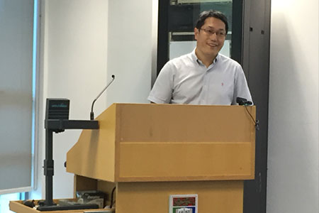
Professor Jianguo Zhao
Seminar: Genetic Engineering in Pigs for Agriculture and Biomedicine
Speaker: Professor Jianguo Zhao
Institute of Zoology, Chinese Academy of Sciences
Beijing, ChinaTime: 11:00 a.m.
Venue: Seminar Room 1, Ground Floor, Laboratory Block, Li Ka Shing Faculty of Medicine, 21 Sassoon Road, Hong Kong
-
2017.6.26 - Seminar
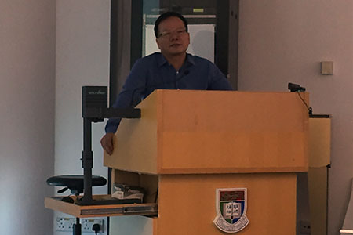
Professor Shengcai Lin
Seminar: Mechanism for Glucose Sensing and Biological Implications
Speaker: Professor Shengcai Lin
Dean, School of Life Sciences, Xiamen University
Xiamen, ChinaTime: 4:00 p.m.
Venue: Seminar Room 1, Ground Floor, Laboratory Block, Li Ka Shing Faculty of Medicine, 21 Sassoon Road, Hong Kong
-
2017.6.26 - Seminar
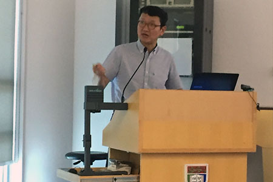
Professor Jae Bum Kim
Seminar: Roles of Lipid Droplet Binding Proteins in Lipid Homeostasis and Fat Tissue Biology
Speaker: Professor Jae Bum Kim
Director, National Creative Research Initiatives Center for Adipose Tissue Remodeling
Department of Biological Science, Seoul National University
Seoul, South KoreaTime: 3:00 p.m.
Venue: Seminar Room 1, Ground Floor, Laboratory Block, Li Ka Shing Faculty of Medicine, 21 Sassoon Road, Hong Kong
-
2017.6.15 - Seminar
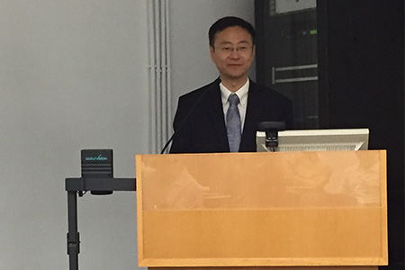
Professor Wei Jia
Seminar: Gut Microbiota-Host Metabolic Interactions in Drug Metabolism and Gastrointestinal Carcinogenesis
Speaker: Professor Wei Jia
Professor, University of Hawaii Cancer Center
Hawaii, USATime: 11:00 a.m.
Venue: Seminar Room 7, Lower Ground Floor, Laboratory Block, Li Ka Shing Faculty of Medicine, 21 Sassoon Road, Hong Kong
-
2017.6.9 - Seminar
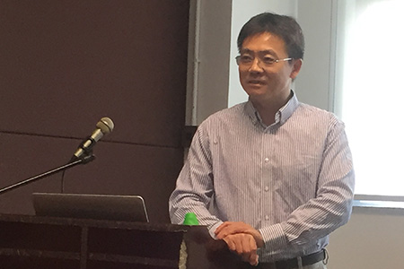
Professor Fanxin Long
Seminar: Metabolic regulation of bone formation
Speaker: Professor Fanxin Long
Professor, Washington University
St Louis, USATime: 11:00 a.m.
Venue: Seminar Room 7-03, 7/F, Hong Kong Jockey Club Building for Interdisciplinary Research, 5 Sassoon Road, Hong Kong
-
2017.6.7
2017年度廣東省科學技術獎項目公示
項目名稱：手術治療肥胖症2型糖尿病的臨床與基礎研究
主要完成單位：暨南大學 香港大學
-
2017.6.5 - Seminar
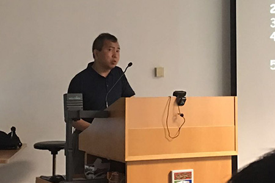
Professor Ming-Hui Zou
Seminar: Redox regulation of mitochondrial homeostasis
Speaker: Professor Ming-Hui Zou
Professor, Georgia State University
Georgia, USATime: 10:30 a.m.
Venue: Seminar Room 6, Lower Ground Floor, Laboratory Block, Li Ka Shing Faculty of Medicine, 21 Sassoon Road, Hong Kong
-
2017.5.2 - Seminar
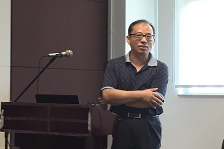
Professor Jiming Ye
Seminar: Repurposing Old Drugs for Diabetes and Fatty Liver Disease
Speaker: Professor Jiming Ye
Professor, Ageing and Chronic Disease Management, Biomedical Science Cluster
RMIT University, AustraliaTime: 10:30 a.m.
Venue: Seminar Room 7-03, 7/F, Hong Kong Jockey Club Building for Interdisciplinary Research, 5 Sassoon Road, Hong Kong
-
2017.4.26 - Seminar
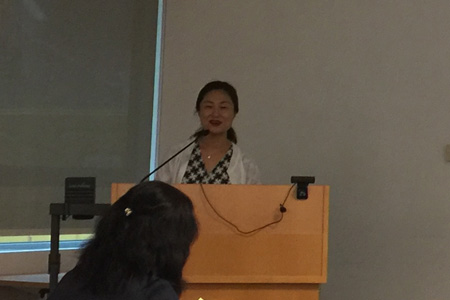
Professor Nari Kim
Joint Seminar by School of Biomedical Sciences and SKLPB:
To develop atherosclerotic artery model using clinical image
Speaker: Professor Nari Kim
Principal Investigator
NLRL for Innovative Cardiovascular Engineering
Professor, Department of Physiology, College of Medicine
Cardiovascular and Metabolic Disease Center, Inje University, Busan, KoreaTime: 11:00 a.m.
Venue: Seminar Room 6, Lower Ground Floor, Laboratory Block, Li Ka Shing Faculty of Medicine, 21 Sassoon Road, Hong Kong
-
2017.4.10 - Seminar
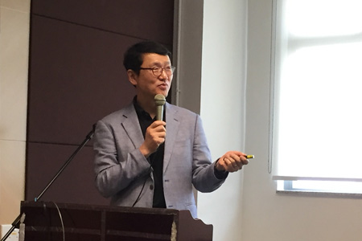
Professor Jae-bum Kim
Seminar: Regulation of Lipid Metabolism and Cell Proliferation in Kidney Cancer
Speaker: Professor Jae-bum Kim
School of Biological Sciences
Seoul National University
Seoul, KoreaTime: 11:30 a.m.
Venue: Seminar Room 7-03, 7/F, Hong Kong Jockey Club Building for Interdisciplinary Research, 5 Sassoon Road, Hong Kong
-
2017.4.10 - Seminar
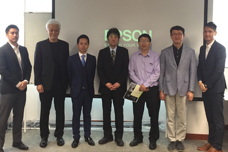
Seminar: Ostrich antibody: Japan's most advanced biomedical technology with unlimited preventative medicine applications
Speaker: Professor Yasuhiro Tsukamoto
Graduate School of Life and Environmental Sciences
Kyoto Prefectural University
JapanTime: 10:30 a.m.
Venue: Seminar Room 7-03, 7/F, Hong Kong Jockey Club Building for Interdisciplinary Research, 5 Sassoon Road, Hong Kong
-
2017.3.17 - Seminar
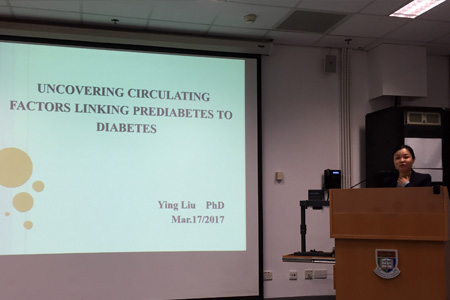
Dr Ying Liu
Seminar: Identifying circulating factors linking prediabetes to diabetes
Speaker: Dr Ying Liu
Department of Advanced Diagnostics
University Health Network-Toronto General Research Institute
Toronto, CanadaTime: 4:00 p.m.
Venue: Seminar Room 2, Ground Floor, Laboratory Block, Li Ka Shing Faculty of Medicine, 21 Sassoon Road, Hong Kong
-
2017.3.12
CONGRATULATIONS!
Dr. Chloe Cheung and Ms. Lu Xu (PhD candidate) were awarded the 'Outstanding Abstract Prize' in the 12th International Symposium on Healthy Aging “Wellness and Longevity: From Science to Service" organized by Research Center of Heart, Brain, Hormone and Healthy aging, The University of Hong Kong.
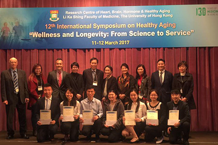
| Official Website |
-
2017.2.28 - Seminar

Professor Patrick Tso
Seminar: The Role of Apolipoprotein AIV in the Regulation of Food Intake and Glucose Homeostasis
Speaker: Professor Patrick Tso
Department of Pathology/Metabolic Diseases Institute
College of Medicine
University of Cincinnati
Cincinnati, Ohio, USATime: 4:00 p.m.
Venue: Seminar Room 7-03, 7/F, Hong Kong Jockey Club Building for Interdisciplinary Research, 5 Sassoon Road, Hong Kong
-
2017.2.8
CONGRATULATIONS!
Dr Ping Gu, Dr Xiaoyan Hui and Professor Aimin Xu have been awarded the Faculty Outstanding Research Output Award 2016.
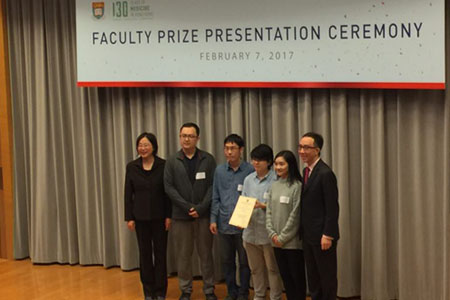
Article: Adiponectin Enhances Cold-Induced Browning of Subcutaneous Adipose Tissue via Promoting M2 Macrophage Proliferation. (doi: 10.1016/j.cmet.2015.06.004)
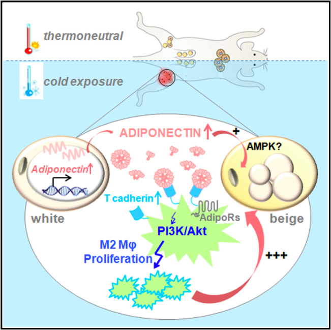
Adiponectin protects against a cluster of obesity-related metabolic complications through multiple mechanisms. This study shows that chronic cold exposure induces adiponectin accumulation in subcutaneous fat, which is indispensable for subcutaneous adipose browning via promoting M2 macrophage proliferation. These findings suggest a key role of adiponectin in mediating crosstalk between innate immunity and adaptive thermogenesis. 
| Cell Metabolism |
-
2017.2.8
CONGRATULATIONS!
Miss Yang Kangmin (PhD Candidate) has been awarded the Roche Postgraduate Research Student Prize.
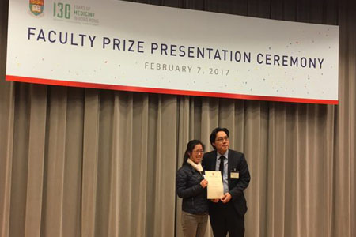
-
2017.1.27
HIGHLIGHT
Hoo R, et al. have a new publication in Scientific Reports.
Article: Adipocyte Fatty Acid Binding Protein Potentiates Toxic Lipids-Induced Endoplasmic Reticulum Stress in Macrophages via Inhibition of Janus Kinase 2-dependent Autophagy.
Lipotoxicity is implicated in the pathogenesis of obesity-related inflammatory complications by promoting macrophage infiltration and activation. Endoplasmic reticulum (ER) stress and adipocyte fatty acid binding protein (A-FABP) play key roles in obesity and mediate inflammatory activity through similar signaling pathways. However, little is known about their interplay in lipid-induced inflammatory responses. Here, we showed that prolonged treatment of palmitic acid (PA) increased ER stress and expression of A-FABP, which was accompanied by reduced autophagic flux in macrophages. Over-expression of A-FABP impaired PA-induced autophagy associating with enhanced ER stress and pro-inflammatory cytokine production, while genetic ablation or pharmacological inhibition of A-FABP reversed the conditions. PA-induced expression of autophagy-related protein (Atg)7 was attenuated in A-FABP over-expressed macrophages, but was elevated in A-FABP-deficient macrophages. Mechanistically, A-FABP potentiated the effects of PA by inhibition of Janus Kinase (JAK)2 activity, thus diminished PA-induced Atg7 expression contributing to impaired autophagy and further augmentation of ER stress. These findings suggest that A-FABP acts as autophagy inhibitor to instigate toxic lipids-induced ER stress through inhibition of JAK2-dependent autophagy, which in turn triggers inflammatory responses in macrophages. A-FABP-JAK2 axis may represent an important pathological pathway contributing to obesity-related inflammatory diseases. 
-
2017.1.17
HIGHLIGHT
Shu L, et al. have a new publication in Nature Communications.
Article: A-FABP mediates adaptive thermogenesis by promoting intracellular activation of thyroid hormones in brown adipocytes.
The adipokine adipocyte fatty acid-binding protein (A-FABP) has been implicated in obesity-related cardio-metabolic complications. Here we show that A-FABP increases thermogenesis by promoting the conversion of T4 to T3 in brown adipocytes. We find that A-FABP levels are increased in both white (WAT) and brown (BAT) adipose tissues and the bloodstream in response to thermogenic stimuli. A-FABP knockout mice have reduced thermogenesis and whole-body energy expenditure after cold stress or after feeding a high-fat diet, which can be reversed by infusion of recombinant A-FABP. Mechanistically, A-FABP induces the expression of type-II iodothyronine deiodinase in BAT via inhibition of the nuclear receptor liver X receptor α, thereby leading to the conversion of thyroid hormone from its inactive form T4 to active T3. The thermogenic responses to T4 are abrogated in A-FABP KO mice, but enhanced by A-FABP. Thus, A-FABP acts as a physiological stimulator of BAT-mediated adaptive thermogenesis. 
-
2017.1.4
CALL FOR PROPOSALS
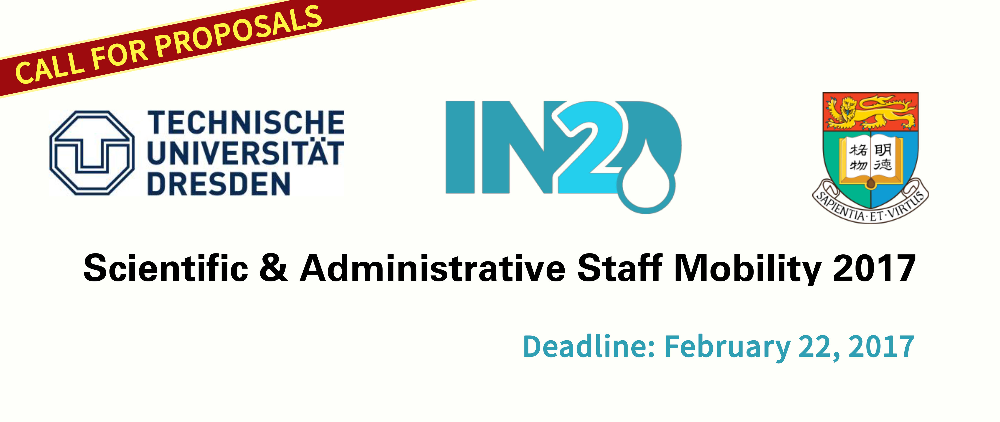
| IN2D | Apply Now | Funding | Selected Conferences |
-
2016.12.26
HIGHLIGHT
Jiang X and Zhou Y, et al. have a new publication in Diabetologia.
Article: APPL1 prevents pancreatic beta cell death and inflammation by dampening NFκB activation in a mouse model of type 1 diabetes.
| Diabetologia |
-
2016.11.7 - Seminar
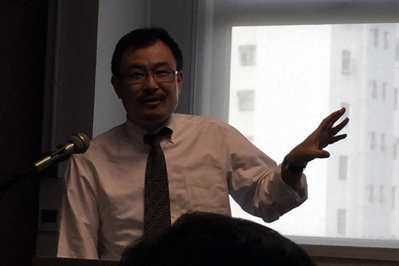
Professor Simin Liu
Seminar: Tracing environmental influences from modern to ancient to improve global cardiometabolic health
Speaker: Professor Simin Liu
Brown UniversityTime: 11:00 a.m.
Venue: Seminar Room 7-03, 7/F, Hong Kong Jockey Club Building for Interdisciplinary Research, 5 Sassoon Road, Hong Kong
-
2016.8.15 - Seminar
Seminar: MicroRNA2911 as a mediator for the antiviral activity of honeysuckle
Speaker: Professor Chen-yu Zhang
Nanjing UniversityTime: 4:00 p.m.
Venue: Seminar Room 2, Ground Floor, Laboratory Block, Li Ka Shing Faculty of Medicine, 21 Sassoon Road, Hong Kong
-
2016.8.10
HIGHLIGHT
Kwok KH and Cheng KK, et al. have a new publication in Clinical Science.
Article: Adipose-Specific Inactivation of JNK Alleviates Atherosclerosis in ApoE-deficient Mice.
Both atherosclerosis and obesity, an independent atherosclerotic risk factor, are associated with enhanced systemic inflammation. Obesity is also characterised by increased adipose tissue inflammation. However, the molecular mechanism underlying the accelerated atherosclerosis in obesity remains unclear. In obesity, activation of c-Jun N-terminal kinase (JNK) contributes to adipose tissue inflammation. This study investigated whether the suppression of fat inflammation through adipose-specific JNK inactivation could protect against atherosclerosis in mice. ApoE-/- mice were crossbred with transgenic mice with adipose-specific expression of a dominant negative form of JNK (dnJNK) to generate apoE-/-/dnJNK (ADJ) mice. High-fat-high-cholesterol diet-treated ADJ mice exhibited significant attenuations of visceral fat and systemic inflammation without changes in lipid or glucose metabolism, and were protected against atherosclerosis, when compared to apoE-/- mice. Lean apoE-/- mice that received transplantation of visceral fat from obese wild-type donor mice for 4 weeks showed exacerbated systemic inflammation and atherosclerotic plaque formation. Conversely, apoE-/- recipients carrying visceral fat graft from obese dnJNK donors were protected against enhanced systemic inflammation and atherogenesis. The beneficial effects of adipose-specific JNK inactivation on atherogenesis in apoE-/- recipients were significantly compromised by continuous infusion of recombinant adipocyte-fatty acid binding protein (A-FABP), previously shown to interact with JNK via a positive feedback loop to modulate inflammatory responses. Together these data suggested that enhanced atherosclerosis in obesity can be attributed, at least in part, to a distant cross-talk between visceral fat and the vasculature, mediated by the release of pro-inflammatory cytokines, such as A-FABP, from the inflamed visceral adipose tissue with JNK activation. 
| Clinical Science |
-
2016.7.27 - Seminar
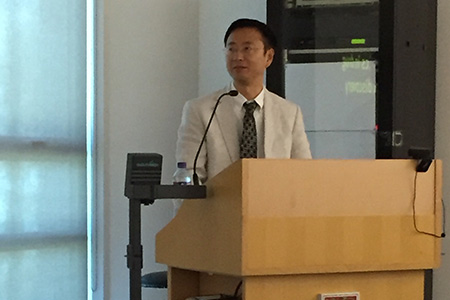
Professor Wei Jia
Seminar: Translational metabolomics in drug metabolism and target discovery
Speaker: Professor Wei Jia
University of Hawaii Cancer CenterTime: 11:00 a.m.
Venue: Seminar Room 1, Ground Floor, Laboratory Block, Li Ka Shing Faculty of Medicine, 21 Sassoon Road, Hong Kong
-
2016.6.21 - Seminar
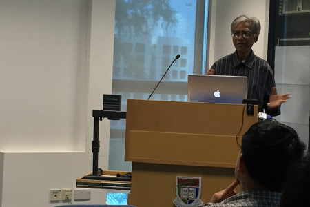
Dr. Alok K Mitra
Seminar: Structure/function correlates of molecular machines and assemblies revealed by cryo-electron microscopy
Speaker: Dr. Alok K Mitra
School of Biological Sciences
The University of Auckland, New ZealandTime: 3:00 p.m.
Venue: Seminar Room 1, Ground Floor, Laboratory Block, Li Ka Shing Faculty of Medicine, 21 Sassoon Road, Hong Kong
-
2016.6.16
ACT NOW!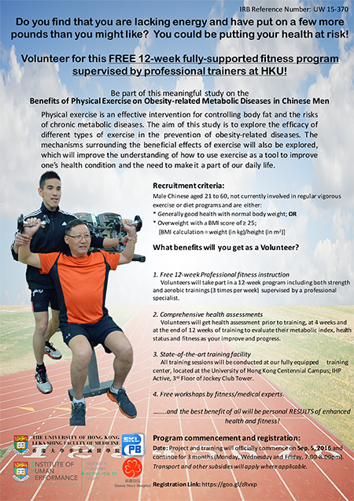
For further registration details and enquiries, please contact:
Dr. Zhu (Tel: 69412725; Email: deliazhu@hku.hk)
Mr. Yao WANG (Tel: 65761578; Email: yaowang@hku.hk)| REGISTRATION | DETAILS |
-
2016.6.6
HIGHLIGHT
Li X and Cheng KK, et al. have a new publication in Nature Communications.
Article: The MDM2-p53-pyruvate carboxylase signalling axis couples mitochondrial metabolism to glucose-stimulated insulin secretion in pancreatic β-cells. (doi:10.1038/ncomms11740)
Mitochondrial metabolism is pivotal for glucose-stimulated insulin secretion (GSIS) in pancreatic β-cells. However, little is known about the molecular machinery that controls the homeostasis of intermediary metabolites in mitochondria. Here we show that the activation of p53 in β-cells, by genetic deletion or pharmacological inhibition of its negative regulator MDM2, impairs GSIS, leading to glucose intolerance in mice. Mechanistically, p53 activation represses the expression of the mitochondrial enzyme pyruvate carboxylase (PC), resulting in diminished production of the TCA cycle intermediates oxaloacetate and NADPH, and impaired oxygen consumption. The defective GSIS and mitochondrial metabolism in MDM2-null islets can be rescued by restoring PC expression. Under diabetogenic conditions, MDM2 and p53 are upregulated, whereas PC is reduced in mouse β-cells. Pharmacological inhibition of p53 alleviates defective GSIS in diabetic islets by restoring PC expression. Thus, the MDM2–p53–PC signalling axis links mitochondrial metabolism to insulin secretion and glucose homeostasis, and could represent a therapeutic target in diabetes. 
-
2016.6.3 - Seminar
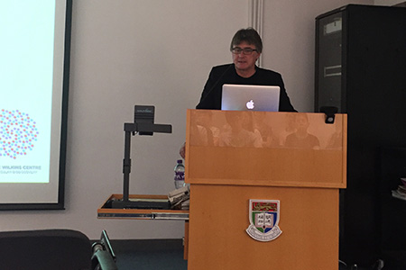
Professor Peter Shepherd
Seminar: Beta-catenin as a key regulator of insulin secretion
Speaker: Professor Peter Shepherd
University of AucklandTime: 2:00 p.m.
Venue: Seminar Room 7, Lower Ground Floor, Laboratory Block, Li Ka Shing Faculty of Medicine, 21 Sassoon Road, Hong Kong
-
2016.5.13 - Seminar
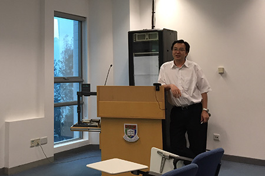
Professor Cong-Yi Wang
Seminar: The good, the bad and the ugly part of M2 macrophages in the pathogenesis of fibrosis
Speaker: Professor Cong-Yi Wang
Huazhong University of Science and TechnologyTime: 16:00 p.m.
Venue: Seminar Room 1, Ground Floor, Laboratory Block, Li Ka Shing Faculty of Medicine, 21 Sassoon Road, Hong Kong
-
2016.5.11 - Seminar
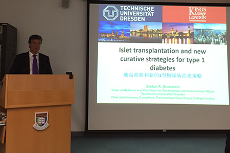
Professor Stefan Bornstein, University of Dresden
Seminar: New developments in islet transplantation
Speaker: Professor Stefan Bornstein
University of DresdenTime: 11:00 a.m.
Venue: Seminar Room 3, Ground Floor, Laboratory Block, Li Ka Shing Faculty of Medicine, 21 Sassoon Road, Hong Kong
-
2016.4.27 - Seminar
Professor Eric Honore
Seminar: Piezo1 and mechanotransduction in the vascular wall
Speaker: Professor Eric Honore
Director of Research CNRS, IPMC-CNRS
Valbonne, France
Molecular Physiology and PharmacologyTime: 11:00 a.m.
Venue: Seminar Room 7, Lower Ground Floor, Laboratory Block, Li Ka Shing Faculty of Medicine, 21 Sassoon Road, Hong Kong
-
2016.4.25
HIGHLIGHT
Li J and Lin S, et al. have a new publication in Circulation.
Article: Akkermansia Muciniphila Protects Against Atherosclerosis by Preventing Metabolic Endotoxemia-Induced Inflammation in Apoe-/- Mice. (doi: 10.1161/CIRCULATIONAHA.115.019645)
Altered composition of the gut microbiota is involved in both onset and progression of obesity and diabetes. However, the link between gut microbiota and obesity-related cardiovascular complications has not been explored. The present study was designed to investigate the role of Akkermansia muciniphila, a mucin-degrading bacterium with beneficial effects on metabolism, in the pathogenesis of atherosclerosis in apolipoprotein E-deficient (Apoe-/-) mice. 
| Circulation |
-
2016.4.19-21
Croucher Foundation Advanced Study Institute
Frontier in Immunometabolism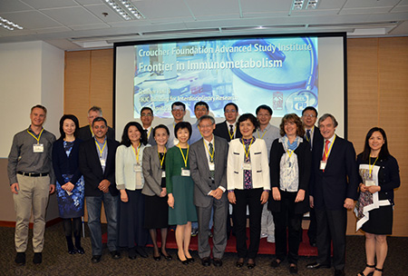
Day 1: Introduction of Immunometabolism
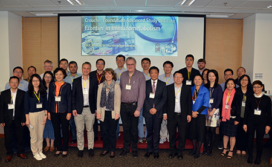
Day 2: Gut Microbiota and Omics approach
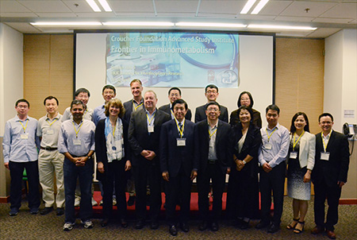
Day 3: Adiponectin and Adipokines
Time: 9:00 a.m. to 5:00 p.m.
Venue: Seminar Hall 3, G/F, Hong Kong Jockey Club Building for Interdisciplinary Research, 5 Sassoon Road, Hong Kong
| Official Website |
-
2016.4.19 - Training
Title: Trends in metabolism: Providing new perspectives on cancer immunotherapy using Seahorse analyzers
Speaker: Dr. Brian P. Dranka
Biology Manager
Seahorse BioscienceTime: 4:45 p.m.
Venue: Seminar Hall 3, G/F, Hong Kong Jockey Club Building for Interdisciplinary Research, 5 Sassoon Road, Hong Kong
-
2016.4.19 - Training
Title: Join the MACS Flow revolution
Speaker: Dr. Sharon Du
Miltenyl BiotecTime: 12:00 p.m.
Venue: Seminar Hall 3, G/F, Hong Kong Jockey Club Building for Interdisciplinary Research, 5 Sassoon Road, Hong Kong
-
2016.4.13
CONGRATULATIONS!
Professor Xu Aimin, Director of SKLPB, receives Croucher Senior Research Fellowship 2016
Four distinguished scholars from the University of Hong Kong were among the eight awardees of the Croucher Awards this year.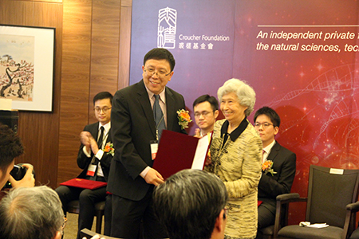
| Press Release | HKET | HKCD | Sing Tao |
| AM730 | Sky Post | HKWWP | Takungpao | -
2016.4.11 - Seminar
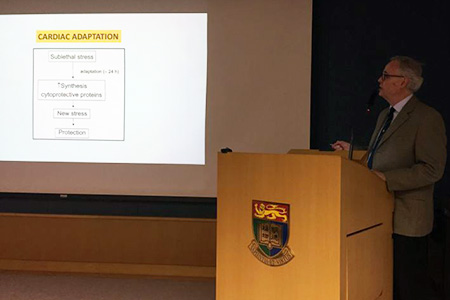
Professor David M. Ansley
Seminar: Propofol for Cardioprotection-signaling pathways, modulation and potential mechanism
Speaker: Professor David M. Ansley
Clinical Professor
Vancouver General Hospital, UBC, CanadaTime: 5:00 p.m.
Venue: 5/F Lecture Theatre, Professorial Block, Queen Mary Hospital, Hong Kong
-
2016.4.11 - Seminar
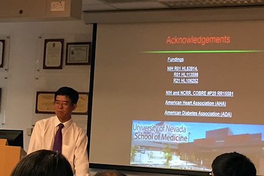
Professor Dayue Duan
Seminar: Phenomics and Precision Medicine: How treatment of cardiovascular disease be more precise and personalized?
Speaker: Professor Dayue Duan
Department of Pharmacology, Laboratory of Cardiac and Vascular Phenomics
Center for Molecular Medicine
University of Nevada School of Medicine, USATime: 2:30 p.m.
Venue: L9-03, 9/F, Laboratory Block, Li Ka Shing Faculty of Medicine, 21 Sassoon Road, Hong Kong
-
2016.3.17 - Seminar
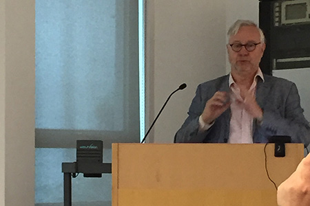
Professor Gregory Dusting
Seminar: Vascularisation and maturation of human cardiomyocytes for cardiac tissue engineering
Speaker: Professor Gregory Dusting
Centre for Eye Research Australia
University of Melbourne, AustraliaTime: 11:00 a.m.
Venue: Seminar Room 1, Ground Floor, Laboratory Block, Li Ka Shing Faculty of Medicine, 21 Sassoon Road, Hong Kong
-
2016.3.3 - Seminar
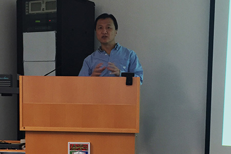
Professor Zhenguo Wu
Seminar: A Molecular Switch that Regulates the Cell Fate Choice Between Muscle Progenitor Cells and Brown Adipocytes
Speaker: Professor Zhenguo Wu
Division of Life Science
Hong Kong University of Science & Technology
Hong KongTime: 11:00 a.m.
Venue: Seminar Room 3, Ground Floor, Laboratory Block, Li Ka Shing Faculty of Medicine, 21 Sassoon Road, Hong Kong
-
2016.2.19 - Seminar
Seminar: Bench to bedside: development of novel therapeutics for cardiovascular application
Speaker: Professor Peter M Kang
Associate Professor of Medicine, Harvard Medical School
Director, Cardiovascular Physiology Core
Beth Israel Deaconess Medical Center
Boston, MA, USATime: 05:00 p.m.
Venue: Seminar Room 1, Ground Floor, Laboratory Block, Li Ka Shing Faculty of Medicine, 21 Sassoon Road, Hong Kong
-
2016.2.16 - Seminar
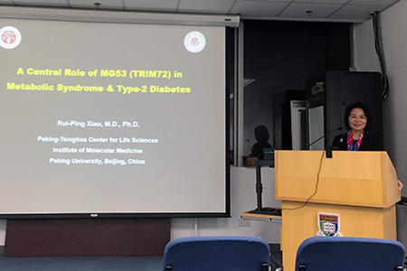
Professor Rui-Ping Xiao
MD, PhD
Seminar: Role of MG53 in Metabolic Syndrome and Diabetic Cardiomyopathy
Speaker: Professor Rui-Ping Xiao
Director of IMM/PKU
Principal Investigator, Laboratory of Signal Transduction
Institute of Molecular Medicine
Peking University, Beijing, ChinaTime: 11:00 a.m.
Venue: Seminar Room 4, Ground Floor, Laboratory Block, Li Ka Shing Faculty of Medicine, 21 Sassoon Road, Hong Kong
-
2016.1.20 - Seminar
Seminar: Decoding the molecular mechanisms of gene regulation based on ′OMICs′ data
Speaker: Dr. Daogang Guan
Research Assistant Professor
Department of Biology
Hong Kong Baptist University
Hong KongTime: 4:30 p.m.
Venue: Seminar Room 7, 7/F, Hong Kong Jockey Club Building for Interdisciplinary Research, 5 Sassoon Road, Hong Kong
-
2016.1.16
CONGRATULATIONS!
Ms. Baile Wang (PhD) Mr. Ho-Man Kwok (PhD) were awarded the 'Best Abstract in Basic Science & Translational' in the 21st Medical Research Conference organized by Department of Medicine, The University of Hong Kong, Queen Mary Hospital.
Presentation Title: APPL2 in ventromedial hypothalamus regulates adaptive thermogenesis by promoting browning of subcutaneous white adipose tissue
Speaker: Ms. Baile Wang
Ms. Baile Wang
PhD CandidatePresentation Title: Suppression of c-Jun N-terminal kinase-mediated Inflammation in Visceral Adipose Tissue Protects against Atherosclerosis in Mice
Speaker: Mr. Ho-Man Kwok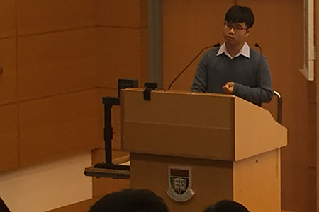
Mr. Ho-Man Kwok
PhD Candidate
| Official Website |
-
2016.1.12 - Seminar
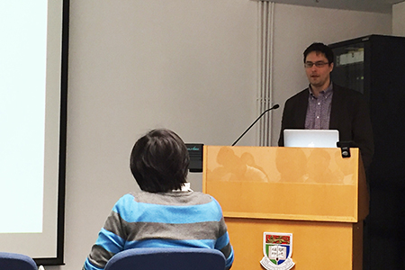
Dr. Edward Thorp
Seminar: Inflammation Resolution in Heart
Speaker: Dr. Edward Thorp
Assistant Professor
Department of Pathology & FCVRI
Feinberg School of Medicine
Northwestern University, Chicago, USATime: 11:00 a.m.
Venue: Seminar Room 7, Lower Ground Floor, Laboratory Block, Li Ka Shing Faculty of Medicine, 21 Sassoon Road, Hong Kong
-
2015.12.22 - Seminar
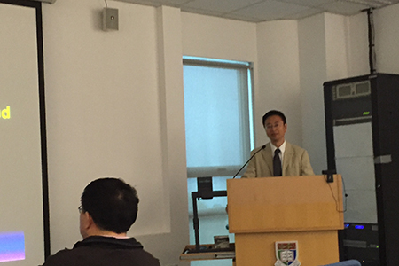
Professor Wei JIA
Seminar: Host-gut microbiota metabolic interactions in toxicology and gastrointestinal carcinogenesis
Speaker: Professor Wei JIA
Professor of Cancer Epidemiology program
Director of Shared Resources
University of Hawaii Cancer Center, HawaiiTime: 10:00 a.m.
Venue: Seminar Room 1, Ground Floor, Laboratory Block, Li Ka Shing Faculty of Medicine, 21 Sassoon Road, Hong Kong
-
2015.12.10
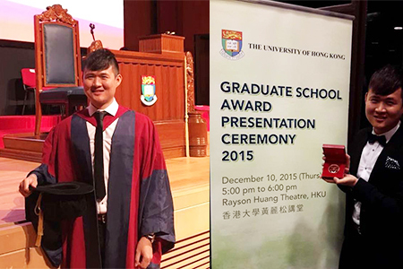
Dr. Larry, Qing Ning Liang
CONGRATULATIONS!
Dr. Larry, Qing Ning Liang was awarded the 'Li Ka Shing Prize (Medicine)', on the basis of academic excellence, for his PhD thesis.
The 'Li Ka Shing Prizes' was a generous donation from Dr. Li Ka Shing to the University of Hong Kong since 1990. The Board of Graduate Studies is responsible for selecting the recipients of the Prizes each year. -
2015.12.5 - Seminar
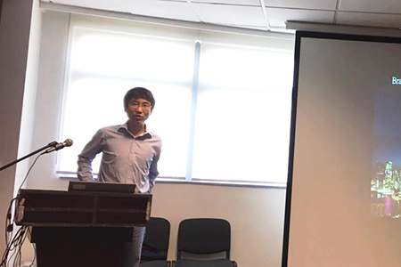
Professor Weiping HAN
Seminar: Novel therapeutic pathway in liver cancer
Speaker: Professor Weiping HAN
Head
Lab of Metabolic Medicine
Singapore Bioimaging Consortium
SingaporeTime: 9:30 a.m.
Venue: Seminar Hall 3, 7/F, Hong Kong Jockey Club Building for Interdisciplinary Research, 5 Sassoon Road, Hong Kong
-
2015.12.3 - Seminar
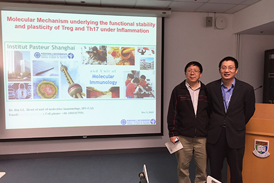
Professor Bin LI
Seminar: Molecular mechanism underlying the functional stability and plasticity of Treg and Th17 under inflammation
Speaker: Professor Bin LI
Professor
Institut Pasteur of Shanghai
Chinese Academy of Sciences
Shanghai, ChinaTime: 5:00 p.m.
Venue: Seminar Room 7, Lower Ground Floor, Laboratory Block, Li Ka Shing Faculty of Medicine, 21 Sassoon Road, Hong Kong
-
2015.11.21
CONGRATULATIONS!
Ms. Lingling Shu (PhD candidate) was awarded the 'Second Place' for her Oral Presentation entitled 'Adipocyte Fatty Acid Binding Protein Mediates Adaptive Thermogenesis via Inducing Intracellular Thyroid Hormone Conversion' in the 13th Annual World Congress on Insulin Resistance, Diabetes and Cardiovascular Diseases, held in Los Angeles (19-21 November, 2015).
| Official Website |
-
2015.11.20 - Seminar
Seminar: CRISPR/Cas9 Mediated Human-like Hamster Models for Atherosclerosis Research
Speaker: Professor Guoqing Liu
Deputy Director
Institute of Cardiovascular Sciences
Peking University Health Science Center
Beijing, ChinaTime: 5:00 p.m.
Venue: Seminar Room 1, Ground Floor, Laboratory Block, Li Ka Shing Faculty of Medicine, 21 Sassoon Road, Hong Kong
-
2015.11.18 - Seminar
Seminar: Effects of pulse pressure on endothelial function
Speaker: Professor Eric Thorin
Institut de Cardiologie de Montréal
Centre de Recherche 5000
rue Bélanger
Montréal Quebec H1T 1C, CanadaTime: 5:00 p.m.
Venue: Seminar Room 4, Ground Floor, Laboratory Block, Li Ka Shing Faculty of Medicine, 21 Sassoon Road, Hong Kong
-
2015.11.17 - Seminar
Seminar: Explore the role of long non-coding genes in brown adipose tissue
Speaker: Dr. Lei SUN
Assistant Professor
Duke-NUS Graduate Medical School
SingaporeTime: 5:00 p.m.
Venue: Seminar Room 6, Lower Ground Floor, Laboratory Block, Li Ka Shing Faculty of Medicine, 21 Sassoon Road, Hong Kong
-
2015.7.7
HIGHLIGHT
Hui X and Gu P, et al. have a new publication in the Cell Metabolism.
Article: Adiponectin Enhances Cold-Induced Browning of Subcutaneous Adipose Tissue via Promoting M2 Macrophage Proliferation. (doi: 10.1016/j.cmet.2015.06.004)
Adiponectin protects against a cluster of obesity-related metabolic complications through multiple mechanisms. This study shows that chronic cold exposure induces adiponectin accumulation in subcutaneous fat, which is indispensable for subcutaneous adipose browning via promoting M2 macrophage proliferation. These findings suggest a key role of adiponectin in mediating crosstalk between innate immunity and adaptive thermogenesis. 
| Cell Metabolism |
-
2015.3.20
HIGHLIGHT
Lin Z and Pan X, et al. have a new publication in Circulation.
Article: Fibroblast Growth Factor 21 Prevents Atherosclerosis by Suppression of Hepatic Sterol Regulatory Element-Binding Protein-2 and Induction of Adiponectin in Mice. (doi: 10.1161/CIRCULATIONAHA.115.015308)
The proposed mechanism whereby FGF21 suppresses atherosclerosis via induction of adiponectin (ADN) and suppression of Srebp-2.
| Circulation |
-
2015.5.29 - Seminar
Seminar: Multiple Pathways of Insulin Resistance in Obesity
Speaker: Professor Norman Jae Bum Kim
Department of Biological Sciences
College of Natural Sciences
Seoul National University
Seoul, KoreaTime: 11:00 a.m.
Venue: Seminar Room 4, Ground Floor, Laboratory Block, Li Ka Shing Faculty of Medicine, 21 Sassoon Road, Hong Kong
-
2015.5.18 - Seminar
Seminar: Orthosteric or Allosteric? The Yin and Yang of Receptor Biology
Speaker: Professor Arthur Christopoulos
Professor of Pharmacology, Faculty of Pharmacy and Pharmaceutical Sciences
Monash University
NHMRC Principal Research Fellow
Theme Leader - Drug Discovery Biology
Monash Institute of Pharmaceutical Sciences
Melbourne, AustraliaTime: 5:00 p.m.
Venue: Mrs. Chen Yang Foo Oi Telemedicine Centre, 2/F William MW Mong Block, 21 Sassoon Road, Hong Kong
-
2015.4.29 - Seminar
Seminar: Epigenetics: effects of Bromodomain and Extra-Terminal (BET) protein inhibition in cells and clinical trials
Speaker: Professor Norman C. W. Wong MD, FRCPC
Department of Medicine and Biochemistry & Molecular Biology
University of Calgary, Canada
Melbourne, AustraliaTime: 12:00 p.m.
Venue: Seminar Room 4, Ground Floor, Laboratory Block, Li Ka Shing Faculty of Medicine, 21 Sassoon Road, Hong Kong
-
2015.3.8
CONGRATULATIONS!
Ms. Lingling Shu (PhD candidate) was awarded the 'Young Investigator Award (Poster Category)' and Ms. Zhe Huang was awarded the 'Outstanding Abstract Prize' in the Tenth International Symposium on Healthy Aging “A Decade of Positive Aging" organized by Research Center of Heart, Brain, Hormone and Healthy aging, The University of Hong Kong.
| Official Website |
-
2015.3.5 - Seminar
Seminar: Type 2 Diabetes: An Infectious Disease?
Speaker: Professor Juergen Graessler, MD
Department of Medicine
Dresden Technical University, GermanyTime: 4:30 p.m.
Venue: Seminar Room 4, Ground Floor, Laboratory Block, Li Ka Shing Faculty of Medicine, 21 Sassoon Road, Hong Kong
-
2015.1.17
CONGRATULATIONS!
Dr. Dewei Ye was awarded the 'Best Oral Presentation in Basic Science & Translational' in the 20th Medical Research Conference organized by Department of Medicine, The University of Hong Kong, Queen Mary Hospital.
| Official Website |
-
2015.1.17
CONGRATULATIONS!
Mr. Jimmy Lee (MPhil) was awarded the 'Best Abstract in Basic Science & Translational' in the 20th Medical Research Conference organized by Department of Medicine, The University of Hong Kong, Queen Mary Hospital.
| Official Website |
-
2015.1.7 - Seminar
Seminar: Establishment of expanded potential stem cells
Speaker: Mr. Jason Tsang
PhD candidate, Wellcome Trust Sanger Institute, Cambridge, United KingdomTime: 11:00 a.m.
Venue: Seminar Room 7, Lower Ground Floor, Laboratory Block, Li Ka Shing Faculty of Medicine, 21 Sassoon Road, Hong Kong
-
2014.12.31
2015年國家科技進步獎
專案名稱 二型糖尿病分子發病機制及預警體系的建立和應用
項目完成人 賈偉平，胡承，汪玉，林小玲，李華婷，包玉倩，張蓉，王從容，方啟晨，於浩泳
專案主要完成單位 上海市第六人民醫院；香港大學
項目簡介
本項目聚焦於中國人患二型糖尿病之特點，針對遺傳標記和血清細胞因數兩個範疇，探尋糖尿病及其風險因素的早期診斷及個人化治療標記，並據此推動了臨床轉化的研究：
1）開展患二型糖尿病遺傳學群體研究，依據新發現的中國人患二型糖尿病及視網膜病變遺傳易感位點構建成易感基因圖譜，並發現PAX4 及KCNQ1 等基因的遺傳變異可影響口服降糖藥的療效，推動了二型糖尿病個人化診斷與治療；
2）發現FGF21，A-FABP和LCN2 可作為預測二型糖尿病及高風險人群、代謝綜合症和心血管病變病發與發展的新血清生物標記物。以上成果均有助糖尿病高危人群早期診治與個人化治療，讓早期疾病控制取得重大進步。
獲獎情況
榮獲2013年度上海市科技進步一等獎、2012年度高等學校科學研究優秀成果獎科學技術進步一等獎。香港大學
2014年12月31日| Official Website |
-
2014.12.11
CONGRATULATIONS!
Ms Zhong Ling (PhD) was awarded the 'The Runner-up Presenter' in Oral Presentation of the 19th Research Postgraduate Symposium organized by Li Ka Shing Faculty of Medicine, The University of Hong Kong.
| Official Website |
-
2014.12.10
CONGRATULATIONS!
Mr. Kelvin, Ho Man Kwok (PhD) was awarded the 'Merit in Recognition of the Best Poster Presentation' in the 19th Research Postgraduate Symposium organized by Li Ka Shing Faculty of Medicine, The University of Hong Kong.
| Official Website |
-
2014.12.5
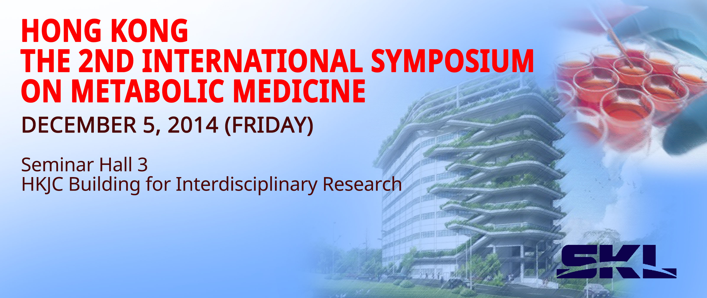Time: 8:40 a.m. to 6:30 p.m.
Venue: Seminar Hall 3, 7/F, Hong Kong Jockey Club Building for Interdisciplinary Research, 5 Sassoon Road, Hong Kong
| Official Website |
-
2014.12.2 - Seminar
Seminar: Inhibition of adenylyl cyclase type 5 enhances longevity and exercise performance and protects against diabetes and obesity
Speaker: Professor Stephen F. Vatner
University Professor, Director
Cardiovascular Research Institute Rutgers University, New Jersey Medical School
Newark, NJ, United StatesTime: 5:00 p.m.
Venue: Seminar Room 4, Ground Floor, Laboratory Block, Li Ka Shing Faculty of Medicine, 21 Sassoon Road, Hong Kong
-
2014.11.24 - Seminar
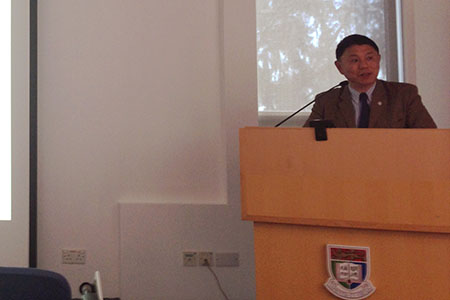
Professor Mingwei Wang
Seminar: Class B GPCR drug discovery: from serendipitous findings to organized effortsSpeaker: Professor Ming-Wei Wang
Director of Chinese National Center for Drug Screening and Director of Chinese National Compound Library
Shanghai Institute of Materia Medica, Chinese Academy of Sciences,
Shanghai, ChinaTime: 4:30 p.m.
Venue: Seminar Room 1, Ground Floor, Laboratory Block, Li Ka Shing Faculty of Medicine, 21 Sassoon Road, Hong Kong
-
2014.10.30 - Seminar
Seminar: Insulin granule biogenesis and turnover
Speaker: Professor Michele Solimena
Professor of Molecular Diabetology, Executive Director of the Paul Langerhans Institute DresdenTime: 11:00 a.m.
Venue: Seminar Room 2, Ground Floor, Laboratory Block, Li Ka Shing Faculty of Medicine, 21 Sassoon Road, Hong Kong
-
2014.9.30 - Seminar
Seminar: New therapeutics for blinding retinal vessel disease
Speaker: Professor Greg Dusting, PhD
Executive Director, Research and Professorial Fellow, University of MelbourneTime: 11:30 a.m.
Venue: Seminar Room 7, Lower Ground Floor, Laboratory Block, Li Ka Shing Faculty of Medicine, 21 Sassoon Road, Hong Kong
-
2014.8.21 - Seminar
Seminar: Functional importance of T-type voltage-gated calcium channels in the cardiovascular and renal system
Speaker: Professor Pernille B. Lærkegaard Hansen
Professor WSR, Cardiovascular and Renal Research Institute for Molecular Medicine, University of Southern Denmark, Odense C, DenmarkTime: 5:00 p.m.
Venue: Seminar Room 6, Lower Ground Floor, Laboratory Block, Li Ka Shing Faculty of Medicine, 21 Sassoon Road, Hong Kong
-
2014.7.21 - Seminar
Seminar: Mass spectrometry-based metabolomics in animal models and human cohort
Speaker: Professor Zongwei Cai
Director, State Key Laboratory of Environmental and Biological Analysis, Hong Kong Baptist UniversityTime: 2:00 p.m.
Venue: Seminar Room, 7/F, Hong Kong Jockey Club Building for Interdisciplinary Research, 5 Sassoon Road, Hong Kong
-
2014.7.4 - Seminar
Seminar: Drugging the Undruggable: Therapeutic Potential of Targeting Protein Tyrosine Phosphatasese
Speaker: Professor Zhong-Yin Zhang
Professor, Department of Biochemistry and Molecular Biology, Indiana University School of MedicineTime: 11:00 a.m.
Venue: Seminar Room 7, 7/F, Hong Kong Jockey Club Building for Interdisciplinary Research, 5 Sassoon Road, Hong Kong
-
2014.5.30
HIGHLIGHT
Cheng, K.K. and Zhu, W. et al. have a new publication in the Diabetes.
TITLE: The adaptor protein APPL2 inhibits insulin-stimulated glucose uptake by interacting with TBC1D1 in skeletal muscle. (doi: 10.2337/db14-0337)
| Diabetes |
-
2014.5.29
HIGHLIGHT
Lin, Z. and Wu, F. et al. have a new publication in the Journal of Hepatology.
TITLE: Adiponectin protects against acetaminophen-induced mitochondrial dysfunction and acute liver injury by promoting autophagy in mice. (doi: 10.1016/j.jhep.2014.05.033)
-
2014.4.10
HIGHLIGHT
Song, E. and Fan, P. et al. have a new publication in the Journal of the American Heart Association.
TITLE: Deamidated lipocalin-2 induces endothelial dysfunction and hypertension in dietary obese mice. (doi: 10.1161/JAHA.114.000837)
| JAHA |
-
2014.4.7
HIGHLIGHT
Li, H. and Wei, S. et al. have a new publication in the EMBO Reports.
TITLE: BIG3 inhibits insulin granule biogenesis and insulin secretion. (doi: 10.1002/embr.201338181)
| EMBO reports |
-
2014.5.19 - Seminar
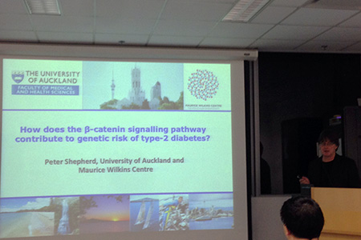
Professor Peter Shepherd
Seminar: Beta-catenin as a key mediator of glucose stimulated insulin secretion from beta-cells
Speaker: Professor Peter Shepherd
Dept. of Molecular Medicine and Pathology, University of Auckland, New ZealandTime: 11:00 a.m.
Venue: Seminar Room 4, Ground Floor, Laboratory Block, Li Ka Shing Faculty of Medicine, 21 Sassoon Road, Hong Kong
-
2014.5.7 - Seminar
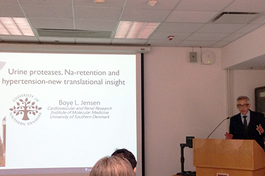
Professor Boye L. Jensen
Seminar: Urine proteases, Na-retention and hypertension-new translational insight
MD, PhD
Speaker: Professor Boye L. Jensen
Professor, Head of Research Unit, Institute of Molecular Medicine, Department of Cardiovascular and Renal Research, University of Southern DenmarkTime: 11:00 a.m.
Venue: Seminar Room 7, Lower Ground Floor, Laboratory Block, Li Ka Shing Faculty of Medicine, 21 Sassoon Road, Hong Kong
-
2014.4.29 - Seminar
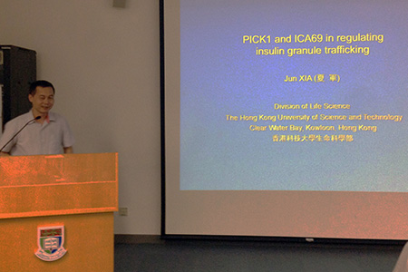
Dr. Xia Jun
Seminar: PICK1 and ICA69 in regulating insulin granule trafficking
PhD
Speaker: Dr. Xia Jun, PhD
Associate Professor, Division of Life Science, The Hong Kong University of Science & TechnologyTime: 3:30 p.m.
Venue: Seminar Room 3, Ground Floor, Laboratory Block, Li Ka Shing Faculty of Medicine, 21 Sassoon Road, Hong Kong
-
2014.4.24 - Seminar
Seminar: PDH flux in metabolic syndrome
Speaker: Professor Lee In-kyu
Professor and Director, Bio-Medical Research Institute and Research Institute of Aging and Metabolism, School of Medicine, Kyungpook National University, KoreaTime: 5:00 p.m.
Venue: Seminar Room 3, Ground Floor, Laboratory Block, Li Ka Shing Faculty of Medicine, 21 Sassoon Road, Hong Kong
-
2014.4.17 - Training
Title: The Theory and Practice of Comprehensive Lab Animal Monitoring System
Time: 3:00 p.m.
Venue: Seminar Room 5, Lower Ground Floor, Laboratory Block, Li Ka Shing Faculty of Medicine, 21 Sassoon Road, Hong Kong
-
2014.4.16
CONGRATULATIONS!
Mr. Larry, Qing Ning Liang (PhD) was awarded the 'PSWC 2014 Student Merit Award' in the 5th International Pharmaceutical Federation (FIP) Pharmaceutical Sciences World Congress, which was held in Melbourne, Australia on 13-16 April 2014.
Around 2,000 international scientists, researchers and academics attended the congress. Mr. Liang presented his work 'FGF21 maintains glucose homeostasis by mediating the crosstalk between liver and brain during prolonged fasting' in the congress and stood out from many presenters to be one of the winners of this award.
The Student Merit awards were selected by the International Pharmaceutical Federation and confirmed by the central PSWC Program Committee. The award was presented by the Board of Pharmaceutical Sciences Chair, Professor Geoff Tucker in the ceremony.| Official Website |
-
2014.4.11 - Training
Title: An Introduction Session to myECL
Speaker: Dr. Chris Lam & Technical Manager in Thermo Fisher
Time: 3:00 p.m.
Venue: Seminar Room 7-05, 7/F, Hong Kong Jockey Club Building for Interdisciplinary Research, 5 Sassoon Road, Hong Kong
-
2014.4.9 - Training
Title: XFe Intro Training - Maximize XF Assay Efficiency and Performance
Speaker: Dr. Alex Luan
Marketing & Application Manager, APAC for Seahorse BioscienceTime: 3:00 p.m.
Venue: Seminar Room 2, Ground Floor, Laboratory Block, Li Ka Shing Faculty of Medicine, 21 Sassoon Road, Hong Kong
-
2014.3.24 - Seminar
Seminar: Anthocyanins prevent atherosclerotic cardiovascular diseases – basic and applied studies
Speaker: Professor Ling Wenhua
School of Public Health, Sun Yat-Sen University, Guangzhou, ChinaTime: 2:00 p.m.
Venue: Seminar Room 3, Ground Floor, Laboratory Block, Li Ka Shing Faculty of Medicine, 21 Sassoon Road, Hong Kong
-
2014.3.17 - Seminar
Seminar: Brain target validation using SiRNA
Speaker: Professor Daniel Hoyer
Chair and Head, Department of Pharmacology and Therapeutics, School of Medicine, Faculty of Medicine, Dentistry and Health Sciences, The University of Melbourne, Victoria, AustraliaTime: 5:00 p.m.
Venue: Mrs Chen Yang Foo Oi Telemedicine Centre, 2/F, William MW Mong Block, 21 Sassoon Road, Hong Kong
-
2014.3.9
CONGRATULATIONS!
Mr. Larry, Qing Ning Liang (PhD) was awarded the 'Best Oral Abstract Presentations' and 'Young Investigator Awards' under the support of Sun Chieh Yeh Heart Foundation Fund in the 9th International Symposium on Healthy Aging “Aging with Confidence” organized by Research Center of Heart, Brain, Hormone and Healthy aging, The University of Hong Kong.
| Official Website |
-
2014.3.9
CONGRATULATIONS!
Dr. Y.C. Chan was awarded the 'Young Investigator Award for Poster Category' in the 9th International Symposium on Healthy Aging “Aging with Confidence” organized by the Research Center of Heart, Brain, Hormone and Healthy aging, The University of Hong Kong.
TITLE: OBESITY-ASSOCIATED ELEVATION OF MIR-34A: POSSIBLE CONTRIBUTING FACTOR TO FIBROBLAST GROWTH FACTOR (FGF) 21 RESISTANCE
YC CHAN, A STILLITANO, KH KWOK, KSL LAM, A XU
| Official Website |
-
2014.3.5 - Seminar
Seminar: Pancreatic biomarkers and novel therapeutic target for diabetes
Speaker: Dr. Jin-Kui Yang MD, PhD
Director, Department of Endocrinology, Beijing Tongren Hospital, Capital Medical UniversityTime: 4:00 p.m.
Venue: Seminar Room 7-03, 7/F, Hong Kong Jockey Club Building for Interdisciplinary Research, 5 Sassoon Road, Hong Kong
-
2014.3.3 - Seminar
Seminar: COX-2 inhibitors and cardiovascular pathways; transcripomic and pharmacological evidence implicates the kidney as a key driver
Speaker: Professor Jane A. Mitchell
Head of Vascular Biology Section, National Heart and Lung Institute, Institute of Cardiovascular Medicine & Science, Imperial College, LondonTime: 5:00 p.m.
Venue: Seminar Room 7, Lower Ground Floor, Laboratory Block, Li Ka Shing Faculty of Medicine, 21 Sassoon Road, Hong Kong
-
2014.2.6
HIGHLIGHT
Dr. Dewei Ye and Dr. Yudong Wang et al. have a new publication in the HEPATOLOGY.
TITLE: FGF21 protects against acetaminophen-induced hepatotoxicity by Potentiating PGC-1α-mediated antioxidant capacity in mice (doi: 10.1002/hep.27060)
| HEPATOLOGY |
-
2014.1.18
CONGRATULATIONS!
Ms. Baile Wang (MPhil) was awarded the 'Best Abstract in Basic Science & Translational' in the 19th Medical Research Conference organized by Department of Medicine, The University of Hong Kong, Queen Mary Hospital.
| Official Website |
-
2013.12.19 - Seminar
Seminar: A Chemical Approach to Controlling Cell Fate
Speaker: Professor Sheng Ding PhD
Professor, University of California, San FranciscoTime: 4:30 p.m.
Venue: Seminar Room 7-03, 7/F, Hong Kong Jockey Club Building for Interdisciplinary Research, 5 Sassoon Road, Hong Kong
-
2013.12.12
CONGRATULATIONS!
Ms. Zhe Huang (PhD) was awarded the 'Merit in Recognition of the Outstanding Poster Presentation' in the 18th Research Postgraduate Symposium organized by Li Ka Shing Faculty of Medicine, The University of Hong Kong.
| Official Website |
-
2013.12.12 - Seminar
Seminar: GLP-1 signaling pathways in modulating insulin secretion
Speaker: Dr. Mehboob Hussain MD
Associate Professor, Johns Hopkins University, USATime: 12:00 noon
Venue: Anatomy Seminar Room, L1-19, 1/F, Laboratory Block, Li Ka Shing Faculty of Medicine, 21 Sassoon Road, Hong Kong
-
2013.11.29 - Seminar
Seminar: Diabetes, Bariatric Surgery and the Gut
Speaker: Professor Tony Lam
Senior Scientist, Division of Advanced Diagnostics - Metabolism, Toronto General Research InstituteTime: 11:00 a.m.
Venue: Seminar Room 6, Lower Ground Floor, Laboratory Block, Li Ka Shing Faculty of Medicine, 21 Sassoon Road, Hong Kong
-
2013.11.27 - Seminar
Seminar: Regulated exocytosis and diabetes
Speaker: Dr. Weiping Han
Laboratory of Metabolic Medicine, Singapore Biomaging Consortium, Agency for Science, Technology and Research (A*STAR), SingaporeTime: 5:00 p.m.
Venue: Seminar Room 4, Ground Floor, Laboratory Block, Li Ka Shing Faculty of Medicine, 21 Sassoon Road, Hong Kong
-
2013.10.07 - Seminar
Seminar: Novel targets to save beta-cells in diabetes
Speaker: Professor Kathrin Maedler
Director of Islet Biology Laboratory, Centre for Biomolecular Interactions, University of Bremen, GermanyTime: 11:00 a.m.
Venue: Seminar Room 4, Ground Floor, Laboratory Block, Li Ka Shing Faculty of Medicine, 21 Sassoon Road, Hong Kong
-
2013.09.10 - Seminar
Professor Zhenqi Liu
Seminar: Vascular Endothelium as a Therapeutic Target for Diabetes
MD
Speaker: Professor Zhenqi Liu, MD
Chief, Division of Endocrinology and Metabolism, University of Virginia, USATime: 5:30 p.m.
Venue: Mrs Chen Yang Foo Oi Telemedicine Centre, 2/F, William MW Mong Block, 21 Sassoon Road, Hong Kong
-
2013.09.10 - Seminar
Professor Eugene J. Barrett
Seminar: Insulin Treatment of Diabetes: Past, Present and Future
MD, PhD
Speaker: Professor Eugene J. Barrett MD, PhD
Director of the Diabetes Center, University of Virginia, USATime: 4:30 p.m.
Venue: Mrs Chen Yang Foo Oi Telemedicine Centre, 2/F, William MW Mong Block, 21 Sassoon Road, Hong Kong
-
2013.09.02
CONGRATULATIONS!
Partner State Key Laboratory of Pharmaceutical Biotechnology opened at HKU| Press Release | HKCNA | CHINA NEWS | HKWWP |